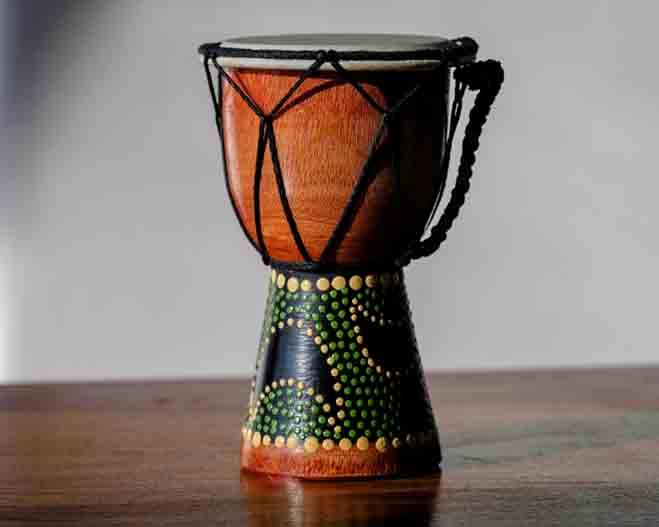

Balafon
The balafon is a type of wooden xylophone or percussion idiophone originating from West Africa. It is played with two padded sticks and known for its resonant tones.
Mbira
The mbira, often called a thumb piano, consists of metal tines attached to a wooden board. It is traditionally played in Zimbabwe and is important in spiritual ceremonies.
Ngoma

The ngoma is a traditional African drum used across Central and Southern Africa for communication, celebration, and ritual purposes.
Kora

The kora is a 21-string lute-bridge-harp used extensively in West Africa. It blends rhythm and melody, often played by griots to pass down oral histories.
Djembe
The djembe is a rope-tuned skin-covered drum from West Africa, played with bare hands. It is known for its wide tonal range and is a centerpiece in dance and storytelling.